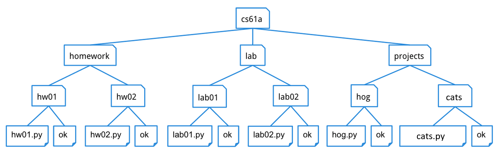
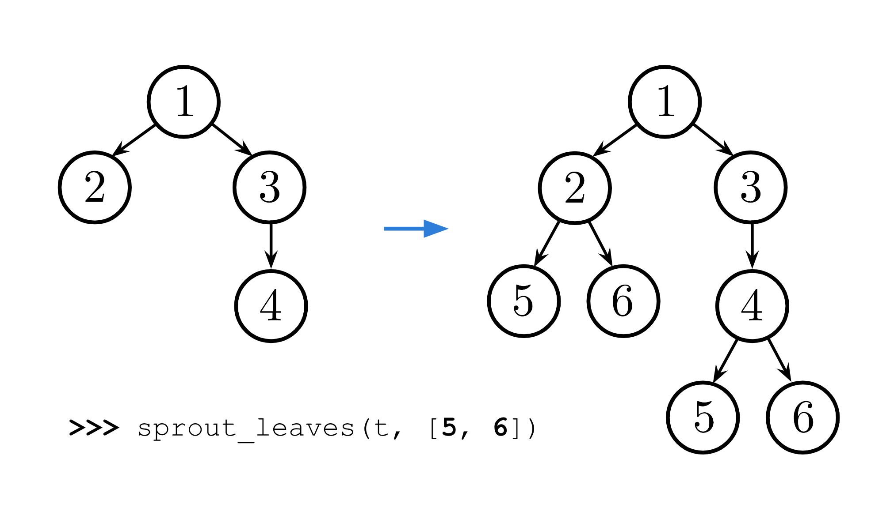

Discussion 4: Tree Recursion, Trees, Python Lists
Getting Started
In this discussion, don't use a Python interpreter to run code until you are confident your solution is correct. Figure things out and check your work by thinking about what your code will do. Not sure? Talk to your group!
[Note] Recursion takes practice. Please don't get discouraged if you're struggling to write recursive functions. Instead, every time you do solve one (even with help or in a group), make note of what you had to realize to make progress. Students improve through practice and reflection.
[For Fun] This emoticon of a guy in a cowboy hat is valid Python: o[:-D]
>>> o = [2, 0, 2, 4]
>>> [ o[:-D] for D in range(1,4) ]
[[2, 0, 2], [2, 0], [2]]🤠
Tree Recursion
For the following questions, don't start trying to write code right away. Instead, start by describing the recursive case in words. Some examples:
- In
fibfrom lecture, the recursive case is to add together the previous two Fibonacci numbers. - In
double_eightsfrom lab, the recursive case is to check for double eights in the rest of the number. - In
count_partitionsfrom lecture, the recursive case is to partitionn-musing parts up to sizemand to partitionnusing parts up to sizem-1.
In case you need a refresher on Tree Recursion, you can use the section below (dropdown if you're on the website)
For example, this is the Virahanka-Fibonacci sequence:
0, 1, 1, 2, 3, 5, 8, 13, ....
Each term is the sum of the previous two terms. This tree-recursive function calculates the nth Virahanka-Fibonacci number.
def virfib(n):
if n == 0 or n == 1:
return n
return virfib(n - 1) + virfib(n - 2)Calling virfib(6) results in a call structure that resembles
an upside-down tree (where f is virfib):

Each recursive call f(i) makes a call to f(i-1) and a call to f(i-2).
Whenever we reach an f(0) or f(1) call, we can directly return 0 or 1
without making more recursive calls. These calls are our base cases.
A base case returns an answer without depending on the results of other calls. Once we reach a base case, we can go back and answer the recursive calls that led to the base case.
As we will see, tree recursion is often effective for problems with branching choices. In these problems, you make a recursive call for each branching choice.
Q1: Insect Combinatorics
An insect is inside an m by n grid. The insect starts at the bottom-left corner (1, 1) and wants to end up at the top-right corner (m, n). The insect can only move up or to the right. Write a function paths that takes the height and width of a grid and returns the number of paths the insect can take from the start to the end. (There is a closed-form solution to this problem, but try to answer it with recursion.)

In the 2 by 2 grid, the insect has two paths from the start to the end. In the 3 by 3 grid, the insect has six paths (only three are shown above).
Run in 61A CodeHint: What happens if the insect hits the upper or rightmost edge of the grid?
Lists
Some of you already know list operations that we haven't covered yet,
such as append. Don't use those today. All you need are list literals (e.g.,
[1, 2, 3]), item selection (e.g., s[0]), list addition (e.g., [1] + [2,
3]), len (e.g., len(s)), and slicing (e.g., s[1:]). Use those! There will be plenty of time for other list
operations when we introduce them next week.
The most important thing to remember about lists is that a non-empty list s can be split into its first element s[0] and the rest of the list s[1:].
There are two forms:
[<expression> for <element> in <sequence>]
[<expression> for <element> in <sequence> if <conditional>]Here's an example that starts with [1, 2, 3, 4], picks out the even elements
2 and 4 using if i % 2 == 0, then squares each of these using i*i. The
purpose of for i is to give a name to each element in [1, 2, 3, 4].
>>> [i*i for i in [1, 2, 3, 4] if i % 2 == 0]
[4, 16]This list comprehension evaluates to a list of:
- The value of
i*i - For each element
iin the sequence[1, 2, 3, 4] - For which
i % 2 == 0
In other words, this list comprehension will create a new list that contains
the square of every even element of the original list [1, 2, 3, 4].
We can also rewrite a list comprehension as an equivalent for statement,
such as for the example above:
>>> result = []
>>> for i in [1, 2, 3, 4]:
... if i % 2 == 0:
... result = result + [i*i]
>>> result
[4, 16]>>> s = [2, 3, 6, 4]
>>> s[0]
2
>>> s[1:]
[3, 6, 4]Q2: Even weighted
Write a function that takes a list s and returns a new list that keeps only
the even-indexed elements of s and multiplies them by their corresponding
index. First approach this problem with a normal for loop (without list comprehension).
Now that you’ve done it with a for loop, try it with a list comprehension!
If you get stuck, ask for help!
Trees
A tree is a data structure that represents a hierarchy of information. A file system is a good example of a tree structure. For example, within your cs61a folder, you have folders separating your projects, lab assignments, and homework. The next level is folders that separate different assignments, hw01, lab01, hog, etc., and inside those are the files themselves, including the starter files and ok. Below is an incomplete diagram of what your cs61a directory might look like.

As you can see, unlike trees in nature, the tree abstract data type is drawn with the root at the top and the leaves at the bottom.
For a tree t:
- Its root label can be any value, and
label(t)returns it. - Its branches are trees, and
branches(t)returns a list of branches. - An identical tree can be constructed with
tree(label(t), branches(t)). - You can call functions that take trees as arguments, such as
is_leaf(t). - That's how you work with trees. No
t == xort[0]orx in torlist(t), etc. - There's no way to change a tree (that doesn't violate an abstraction barrier).
Here's an example tree t1, for which its branch branches(t1)[1] is t2.
t2 = tree(5, [tree(6), tree(7)])
t1 = tree(3, [tree(4), t2])
tree, label, and branches are implemented in
order to use them correctly, but here is the implementation from lecture.
def tree(label, branches=[]):
for branch in branches:
assert is_tree(branch), 'branches must be trees'
return [label] + list(branches)
def label(tree):
return tree[0]
def branches(tree):
return tree[1:]
def is_leaf(tree):
return not branches(tree)
def is_tree(tree):
if type(tree) != list or len(tree) < 1:
return False
for branch in branches(tree):
if not is_tree(branch):
return False
return TrueQ3: Has Path
Implement has_path, which takes a tree t and a list p. It returns whether
there is a path from the root of t with labels p. For example, t1 has a
path from its root with labels [3, 5, 6] but not [3, 4, 6] or [5, 6].
Important: Before trying to implement this function, discuss these questions from lecture about the recursive call of a tree processing function:
- What recursive calls will you make?
- What type of values do they return?
- What do the possible return values mean?
- How can you use those return values to complete your implementation?
If you get stuck, you can view our answers to these questions by clicking the hint button below, but please don't do that until your whole group agrees.
As you usual, you will call has_path on each branch b. You'll make this
call after comparing p[0] to label(t), and so the second argument to
has_path will be the rest of p: has_path(b, p[1:]).
What type of values do they return?
has_path always returns a bool value: True or False.
What do the possible return values mean?
If has_path(b, p[1:]) returns True, then there is a path through branch b
for which p[1:] are the node labels.
How can you use those return values to complete your implementation?
If you have already checked that label(t) is equal to p[0], then a True
return value means there is a path through t with labels p using that branch
b. A False value means there is no path through that branch, but there
might be path through a different branch.
If your group needs some guidance, you can click on the hints below, but please talk with your group first before reading the hints.
p is a list of length one with the
label of t as its only element. The second base case should check if the
first element of p matches the label of t.
p[0] is equal to label(t), and so all that's left to check is that p[1:]
contains the labels in a path through one of the branches. One way is with
this template:
for ____:
if ____:
return True
return FalseDiscussion Time! Can the else case of has_path be written in just one
line? Why or why not? You can ignore how fast the function will run.
Q4: Find Path
Implement find_path, which takes a tree t with unique labels and a value
x. It returns a list containing the labels of the nodes along a path from the
root of t to a node labeled x.
If x is not a label in t, return None. Assume that the labels of t are unique.
First talk through how to make and use the recursive call. (Try it yourselves; don't just click the hint button. That's how you learn.)
find_path(b, x) on each branch b.
What type of values do they return?
Each recursive call will either return None or a non-empty list of node labels.
What do the possible return values mean?
If find_path(b, x) returns None, then x does not appear in b. If
find_path(b, x) returns a list, then it contains the node labels for a path
through b that ends with the node labeled x.
How can you use those return values to complete your implementation?
If a list is returned, then it contains all of the labels in the path except
label(t), which must be placed at the front.
Please don't view the hints until you've discussed with your group and can't make progress.
x is the label of t, then return a list with one element that contains the label of t.
path to the result of a
recursive call to find_path(b, x) so that you can both check whether it's
None and extend it if it's a list.
For a list path and a value v, the expression [v] + path creates a longer
list that starts with v and then has the elements of path.
Description Time! When your group has completed this question, it's time to
describe why this function does not have a base case that uses is_leaf. Come
up with an explanation as a group and pick someone to present your answer.
Q5: Sprout Leaves
Define a function sprout_leaves that takes in a tree, t, and a list of
leaf labels, leaves. It produces a new tree that is identical to t, but where each
old leaf node has new branches, for each label in leaves.
For example, suppose we have the tree t = tree(1, [tree(2), tree(3, [tree(4)])]). Calling
sprout_leaves(t, [5, 6]) produces the following tree:

Run in 61A CodeSubmit Attendance
You're done! Excellent work this week. Please be sure to ask your section TA for the attendance form link and fill it out for credit. (one submission per person per section).
Extra Practice
Q6: Tree Deciphering
What value is bound to result?
result = label(min(branches(max([t1, t2], key=label)), key=label))How convoluted! (That's a big word.)
Here's a quick refresher on how key functions work with max and min,
max(s, key=f) returns the item x in s for which f(x) is largest.
>>> s = [-3, -5, -4, -1, -2]
>>> max(s)
-1
>>> max(s, key=abs)
-5
>>> max([abs(x) for x in s])
5Therefore, max([t1, t2], key=label) returns the tree with the largest label,
in this case t2.
In case you're wondering, this expression does not violate an abstraction
barrier. [t1, t2] and branches(t) are both lists (not trees), and so it's
fine to call min and max on them.